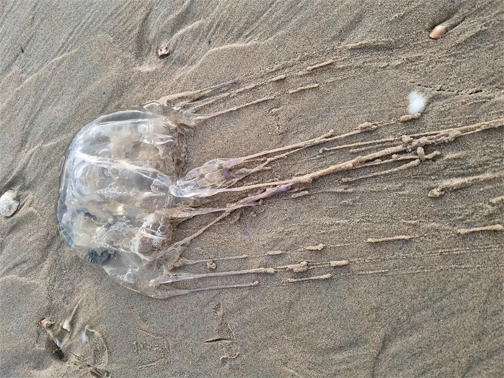

Identification
Ensuring guest safety is our utmost priority, especially when navigating the coastal waters surrounding our resort. It's imperative to recognize and properly identify potentially hazardous marine life, such as the box jellyfish. Identifying this species involves careful observation of its distinct features. Box jellyfish are typically transparent or pale blue, featuring a bell-shaped body reminiscent of a cube, with four corners and trailing tentacles. These tentacles, which can extend up to ten feet, contain venomous stinging cells known as nematocysts. Differentiating the box jellyfish from other marine creatures is crucial for your safety. If a box jellyfish is spotted near the resort's shores, it's vital to promptly notify our lifeguards or resort staff. You should avoid direct contact with the jellyfish and its tentacles to prevent stings, which can cause severe pain and possibly injury or death. By staying vigilant and following safety protocols, our guests can enjoy the beauty of our coastal environment while minimizing the risk of encountering potentially dangerous marine life.
Dangers
Box jellyfish are one of the most venomous creatures in the ocean, and coming into contact with one could cause severe injuries and possibly even death. Their tentacles, covered in thousands of nematocysts, deliver potent toxins upon contact. These stings can result in excruciating pain, skin irritation, nausea, vomiting, muscle cramps, and in severe cases, cardiovascular collapse or even death. Immediate medical attention is essential if stung by a box jellyfish to mitigate the effects of the venom and prevent further complications. Symptoms may vary depending on the severity of the sting and the individual's sensitivity to the venom. While fatalities from box jellyfish stings are rare, they can occur, particularly in vulnerable populations such as children, the elderly, or individuals with pre-existing health conditions. To minimize the risk of encountering box jellyfish, guests are advised to swim in designated areas supervised by lifeguards, wear protective clothing such as rash guards or wetsuits, and avoid swimming during peak jellyfish season or in areas known to have a high concentration of these creatures. Additionally, it's crucial to remain vigilant and aware of warning signs posted by lifeguards or resort staff regarding jellyfish sightings or beach closures. By following these safety guidelines and remaining informed about the potential dangers of box jellyfish, you can safely enjoy your time at our resort while minimizing the risk of injury.
Gallery
